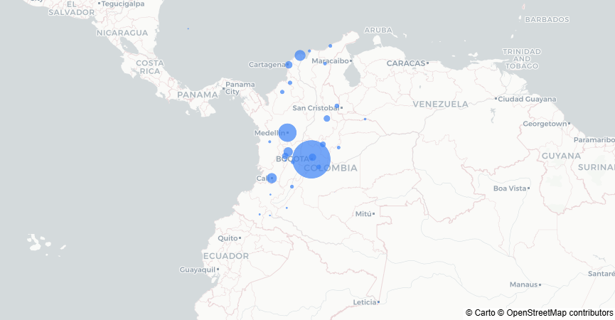
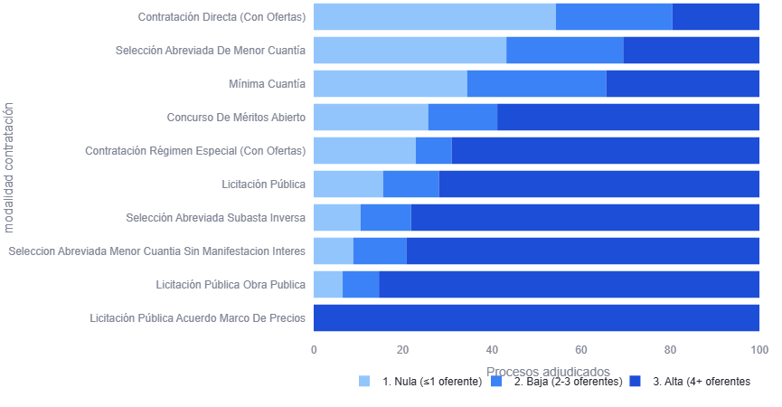
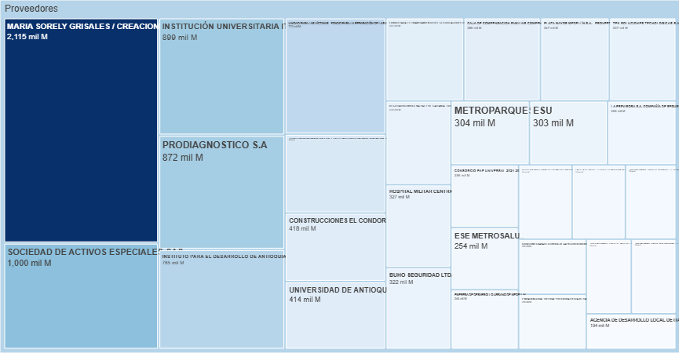
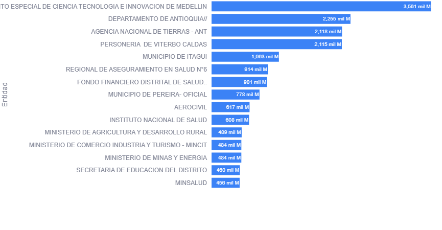

Fuente: Agencia Nacional de Contratación Pública (Colombia Compra Eficiente). El análisis se realizó sobre el universo completo de contratos electrónicos de SECOP II, con más de 5.6 millones de registros procesados y variables asociadas a competitividad y modalidad contractual.
Una parte significativa del presupuesto público se adjudica en procesos con escasa o nula pluralidad de oferentes. Este análisis identifica patrones de baja competitividad en la contratación estatal, permitiendo detectar entidades, modalidades y regiones donde la concentración contractual puede representar mayores riesgos para la transparencia y la eficiencia del gasto público.
Diseñado para facilitar la labor de Veeduría Ciudadana. Provee hallazgos estructurados que permiten identificar y focalizar auditorías en las entidades y regiones con mayor concentración de contratos sin pluralidad de oferentes.



